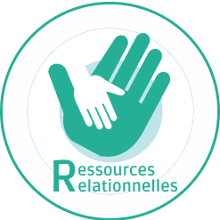
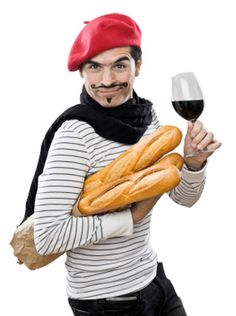
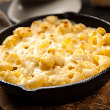

<ion-header [translucent]="true">
  <ion-toolbar>
    
    <ion-buttons slot="secondary">
      <ion-button>
        <ion-icon name="menu-outline"></ion-icon>
      </ion-button>
    </ion-buttons>
  </ion-toolbar>
</ion-header>
<ion-content>
  
 <div class="move">
  <div class="box">
    
   </div>
 </div>

<ion-card>
  <ion-item lines="none">
    <ion-label text-wrap>
      <h2><b>Jean Patrick de la Tourette</b></h2>
      <p>I'M FUCKING MACKING MAC AND CHEESE, AND NOBODY CAN STOP ME</p>
    </ion-label>
  </ion-item>
</ion-card>

</ion-content>


<ion-tab-bar color="light" slot="bottom">
  <ion-tab-button tab="tab1" routerLink="/home">
    <ion-icon name="home"></ion-icon>
  </ion-tab-button>
  <ion-tab-button tab="tab2">
    <ion-icon name="search"></ion-icon>
  </ion-tab-button>
  <ion-tab-button tab="tab3" routerLink="/profil">
    <ion-icon name="person-circle-outline"></ion-icon>
  </ion-tab-button>
</ion-tab-bar>
